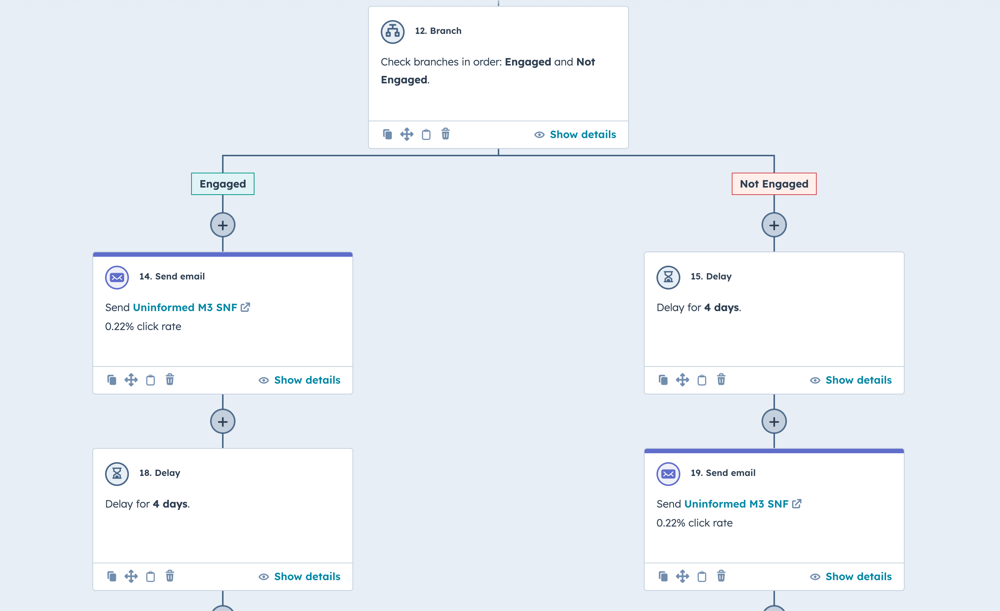
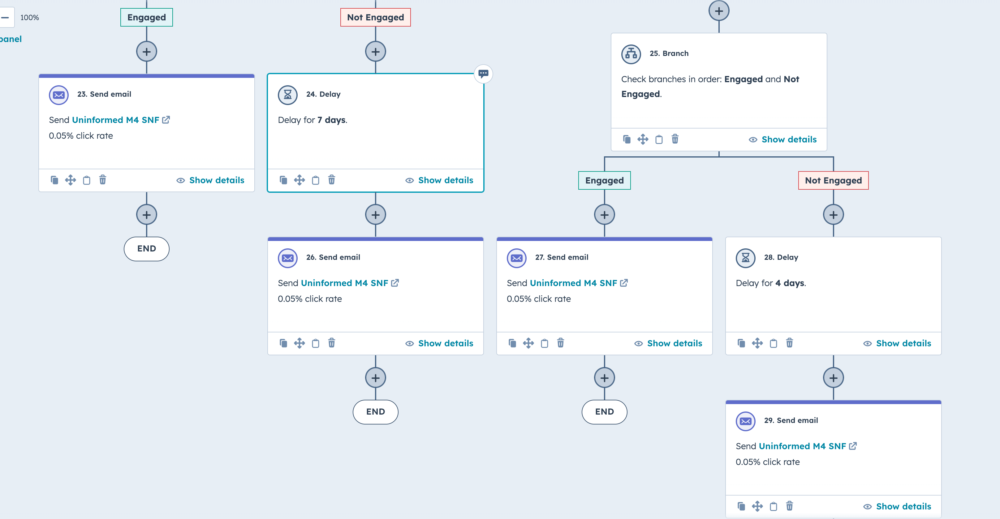
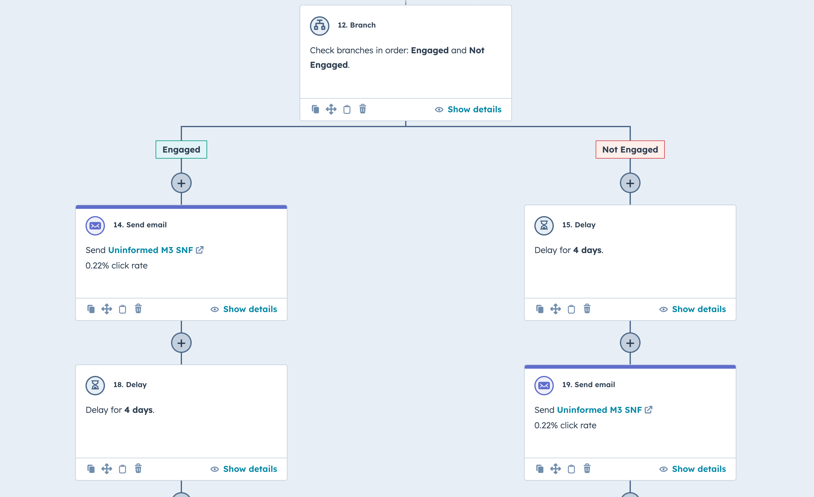
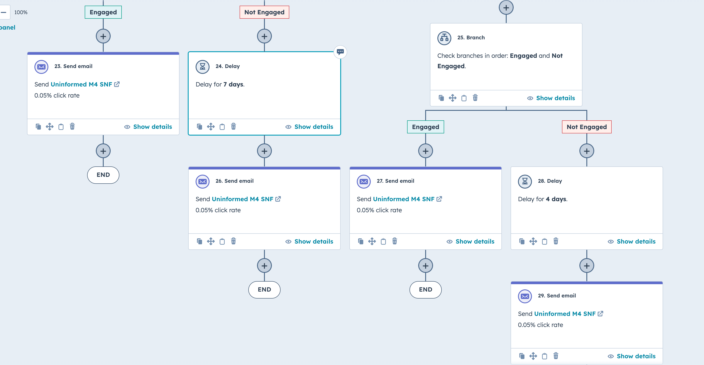

Projects
Automation and Landing Pages.
HubSpot Skilled Nursing and Private Practice Campaign
Web Scraping. Lead Scoring. Lifecycle. Automation. Drip Campaign. Landing Page. Conversions
Tools Used
Hubspot | Python | Wordpress | Vimeo |JavaScript
In the fast-paced landscape of startup environments, you need to be able to shift priorities quickly. As our medical device company grew, so did our customer base, we realized that there was an untapped major player in the market - Skilled Nursing Facilities. These facilities are managed by larger players, who typically have a number of facilities under their belt. This drastically changed our target audience as we could see a clear path to major returns on investment. These are the steps I took to create our first campaign directly from our CRM.
When we lacked a structured way to qualify leads, I created a lead scoring system that ranks contacts based on job titles, email engagement, form submissions, and web activity. This system groups leads into four categories: Uninformed, Educated, High Priority, and Meetings Booked.
By developing this, I ensured we could prioritize high-potential leads and nurture them through tailored content, guiding them toward booking meetings. The result is a more efficient sales process, with clear focus on leads most likely to convert.
- Uninformed: (0-30) points
- Educated: (31-74) points
- High Priority: (75-99) points
- Meetings Booked: (100+) points
After developing the lead scoring system, I segmented contacts into four key buckets and created tailored email drip campaigns for each. Each campaign consists of four emails, and as leads engage more with our content, they are promoted into higher-scoring campaigns. This dynamic scoring means that as their lead score increases, so does the relevance and focus of the content they receive.
For lower-scoring leads, the emails are centered around acknowledging their challenges and introducing how our product can help. As their engagement grows, they are moved into more targeted campaigns, where the messaging shifts to stronger CTAs, adding urgency and encouraging them to take the next step—booking a meeting with our sales team.
For these campaigns to run on the backend, I designed 5 automation workflows where contacts can continuously enroll as long as they meet required criteria.
Each workflow qualifies the contact's score, and then pushes the contact into the campaing until it either goes through the entire worfklow with minimal engagement, or promotes the contact to a higher CTA-focused campaign due to heavy engagment (which further drives up the lead score).
 



Reporting
Hubspot Sales Pipeline and Google Anslytics
Data Entry. Pipeline Routing. Report Creating.
Tools Used
Hubspot | Excel | Google Analytics
I've managed to own and and create reports to establish our sales cycles and visualize our digital marketing. These reports are used for insights to our sales teams, reporting to our Board of Directors, and to create marketing strategies.
These reports are created to estimate conversion times, lead cycles, and measure ROI on our campaigns.


Creative Designs
Sales and Marketing Collateral and Web
Creative designs. Client Collaboration. Case Studies. Web Graphics.
Tools Used
Indesign | Photoshop | Wordpress | JavaScript
These are bits and pieces of collateral and designs I have created for some of my projects.
These reports are created to estimate conversion times, lead cycles, and measure ROI on our campaigns.


These reports are created to estimate conversion times, lead cycles, and measure ROI on our campaigns.


Pokedex API application
Pokemon-app displays pokemons fetched data from the pokeAPI. When a pokemon element is clicked, displays more details about the particular pokemon using a modal. Tools used: Javascript, HTML, CSS, Bootstrap
See project on GithubMeet application
A serverless, progressive web application (PWA) with React built by using test-driven development (TDD) technique. The documentation (acceptance test) of the app was built by applying the behavior-driven development (BDD) technique. The application uses OAuth 2.0 to access and use the Google Calendar API to fetch upcoming events.
See project on websiteYour project?
I can help in realizing front-end and back-end projects with React.js, Javascript, Java, JavaFX, HTML, and CSS. I am also happy to learn other technologies.
Contact me